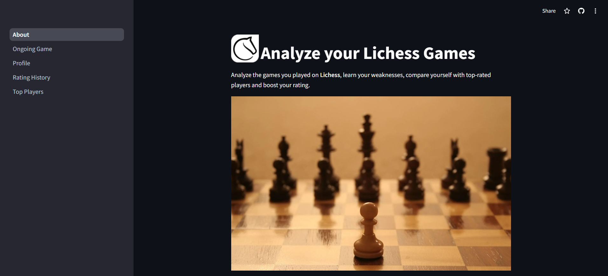
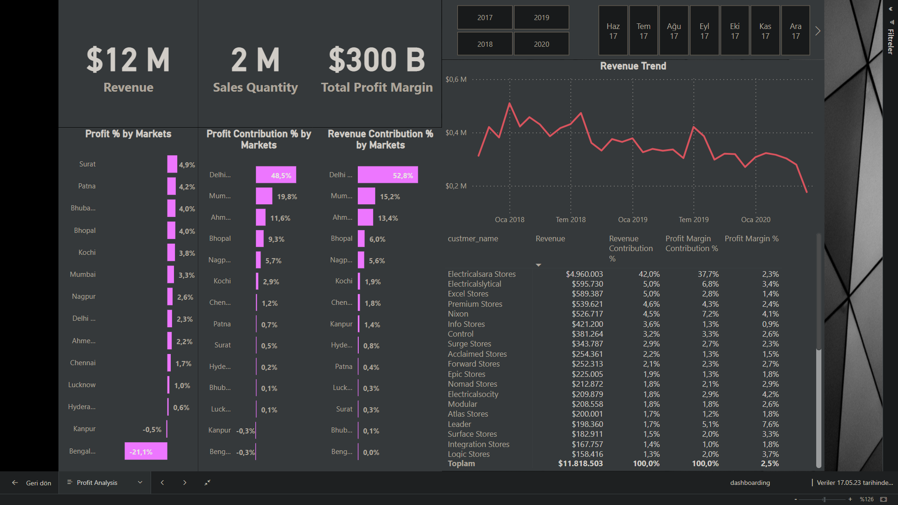
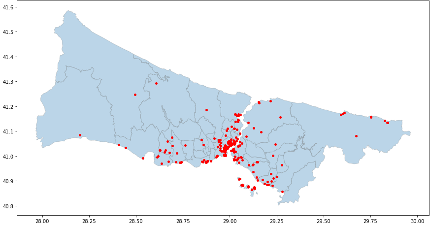
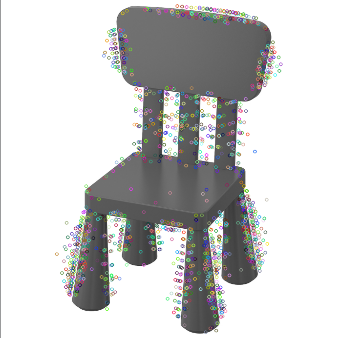
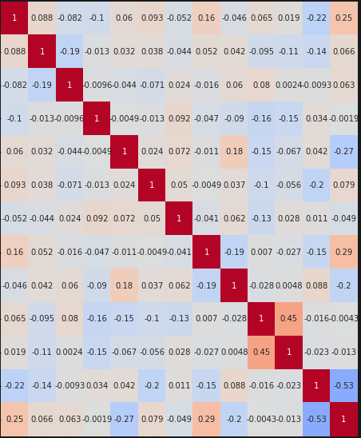

This project is a Streamlit-based web application for analyzing Lichess games and profiles. It provides features to examine game performance, compare ratings with top players, track historical rating trends, and view detailed user profiles. Users can visualize data through interactive charts, fetch and display ongoing games, and gain insights into their chess performance and activity on Lichess using various Python libraries and the Lichess API.

This project includes the analysis and dashboards of the sales made by a company in India in the years 2017, 2018, 2019, and 2020. These dashboards help in examining past data and identifying steps and strategies to be taken for future direction. Dashboarding is great tool for these companies to maximize profit.


The aim of this project is predict bike sharing demand under various circumstances (temperature, humidty, whether it is holiday or not etc.) by using Machine Learning. The dataset include weather information such as temperature, humidty, wind speed, visibility, dewpoint, solar radiation, snowfall, rainfall. In addition to weather information, dataset also include the number of bikes rented per hour and date information of city of Seoul. First of all, Before starting modeling, first getting an idea on how the number of bike rentals depend on the various features provided to us. Which is called EDA process. Regression algorithms used. They are linear algorithms(linear regression, decision tree regressor), ensemble algorithms(random forest regression) and stacking algorithms(gradient boost, grid search CV) where predictions from linear and ensemble methods were used to make final predictions.

In the first part, created visualizations about how gas emissions are seperated all around the world. In the second part, getting information about the correlation between price and location of the airbnb house.

In this project, my aim is comparing feature extraction and feature selection methods by their speeds and performance.

This project mainly focuses on XAI models(SHAP, LIME, DALEX, explainable dashboard). Built each of them.